Thomas MERLEN
À propos de moi
Etudiant en informatique, passionné par les systèmes d'exploitation Linux et les réseaux.
Je suis actuellement au Lycée Turgot à Paris en BTS SIO avec l'option SISR. Avant cela j'ai fais une année à l'université en Licence Informatique.
Je participe régulièrement à des Capture The Flag pour me challenger et apprendre toujours de nouvelle technique dans un cadre éthique !
J'aime mettre en avant les systèmes Linux et les solutions pour utiliser des logiciels libres.
Contacter moi par mail : thomas.merlen@outlook.com
Formations
💻 BTS Services Informatiques aux Organisations (SIO) - Lycée Turgot (75003 Paris)
2025 - 2027
Option : Solutions d'Infrastructure, Systèmes et Réseaux
👨🏻🎓 Licence Informatique - Université Sorbonne Paris Nord (93430 Villetaneuse)
2024 - 2025
🏫 Baccalauréat Général - Lycée Van Gogh (95120 Ermont)
2021 - 2024
Admis Mention Assez Bien
Spécialité : Numérique Sciences Informatiques, Mathématiques, Physique-Chimie
Expériences
👨🏻💻 Stage Deuxième Année de BTS SIO
👨🏻💼 Stage Première Année de BTS SIO
11/05/2026 - 03/07/2026
Compétences
🖥️ Système
GNU/Linux

Nmap
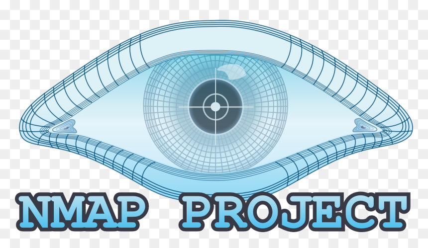
John The Ripper
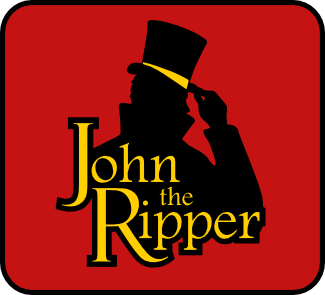
Hydra

🌐 Réseau
Réseau informatique

Protocole réseau
Wireshark
Modèle OSI
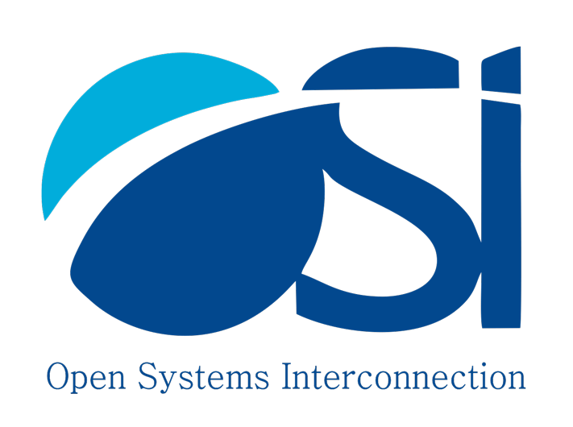
Packet Tracer

🔐 Cybersécurité
Exploitation Web
Reverse Engineering
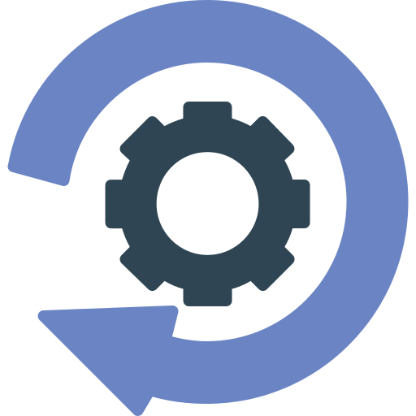
Analyse Forensique
Stéganographie
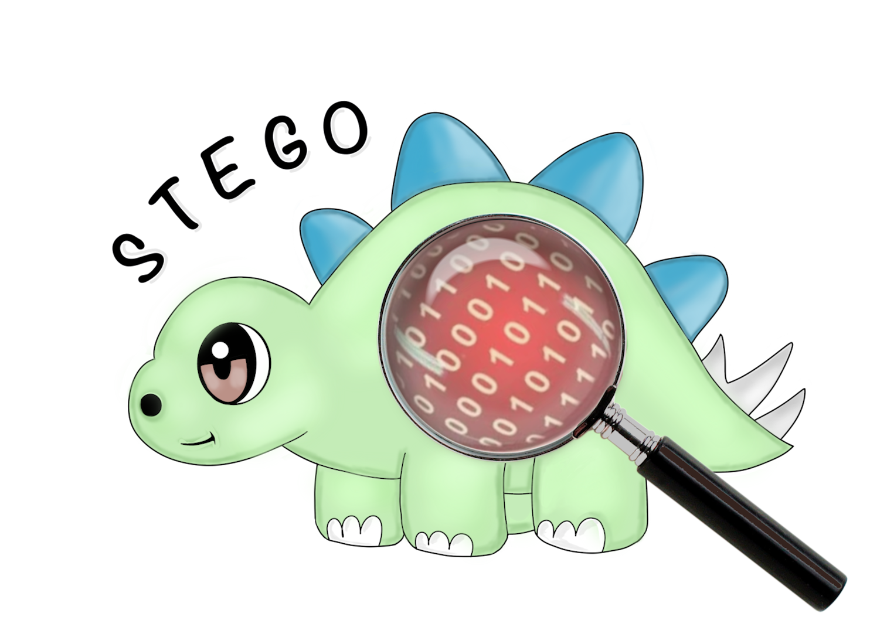
Cryptographie
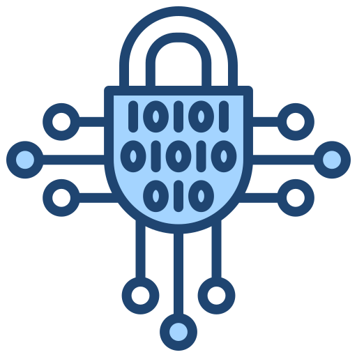
RGPD

💻 Développement
Python

C

HTML

CSS

JavaScript

Base de données
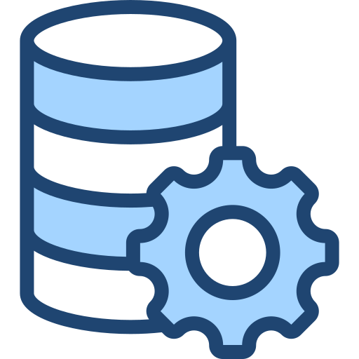
Anglais professionnel
Gestion de projet
Certification
🛡️ Introduction à la méthode EBIOS Risk Manager
Club EBIOS
3 Novembre 2025
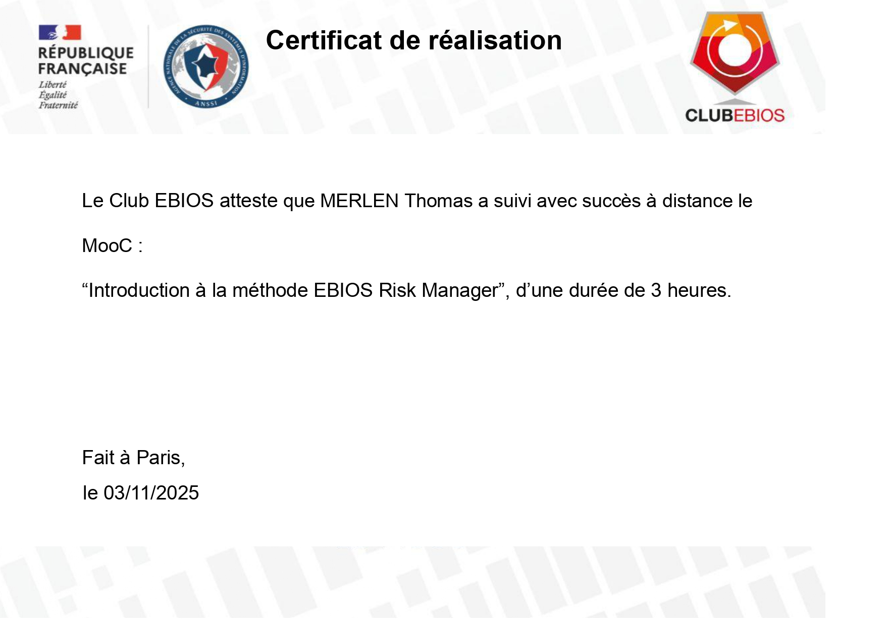
🛡️ Atelier RGPD
Commission Nationale de l’Informatique et des Libertés (CNIL)
Module 1 à 5
12 Octobre 2025
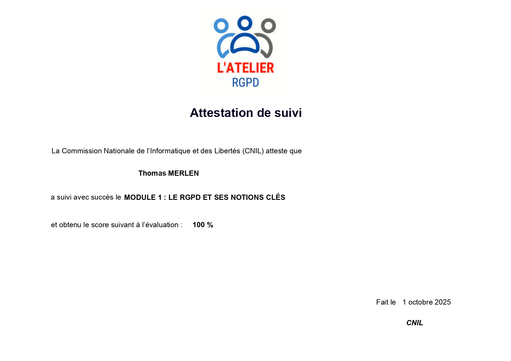
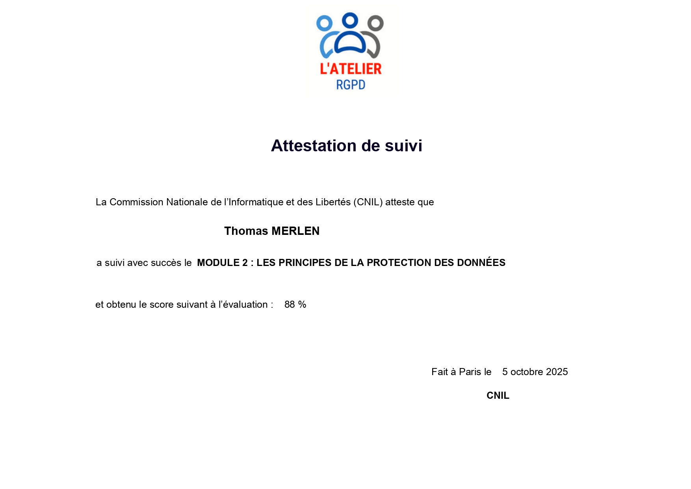
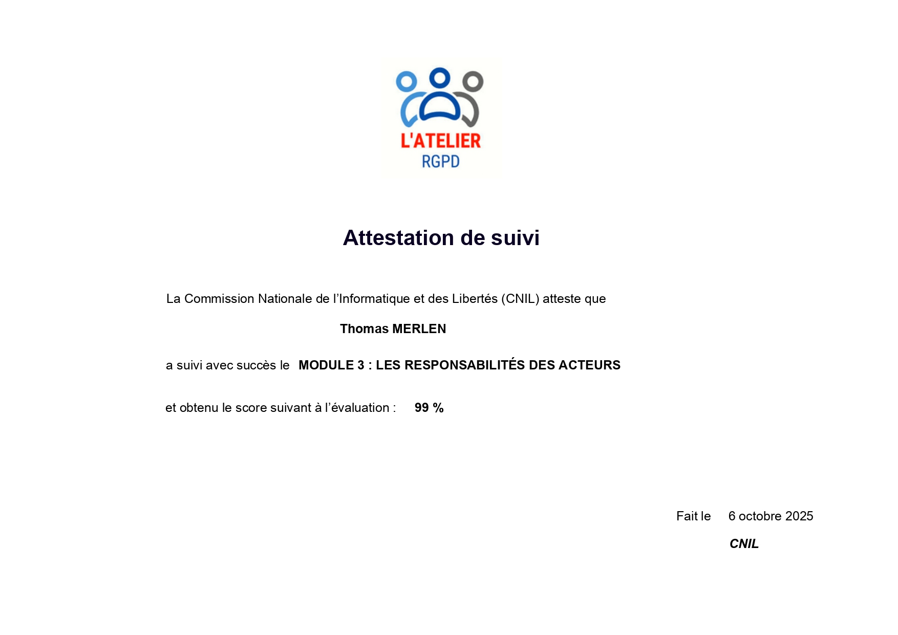
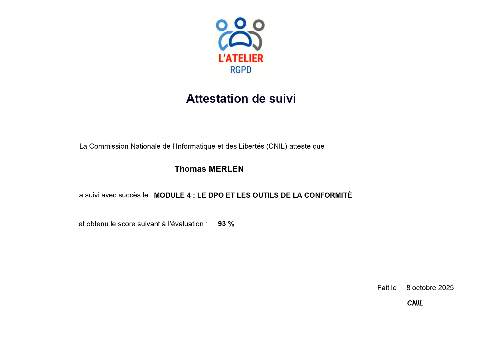
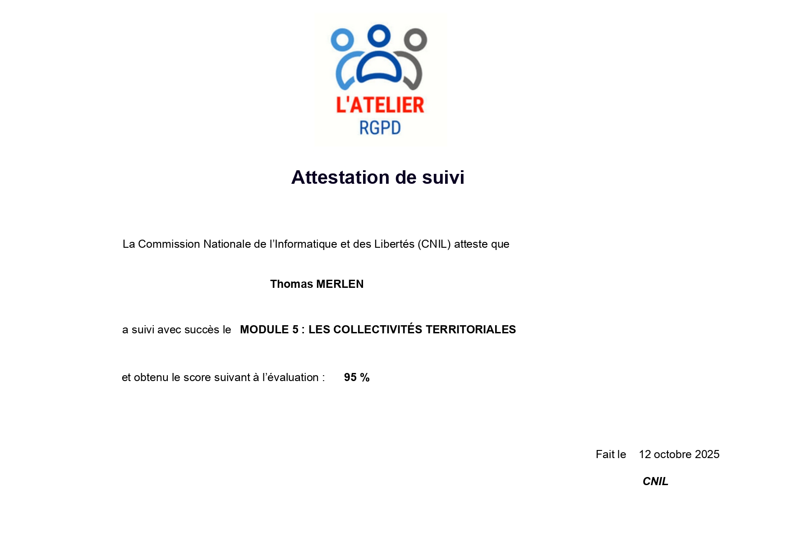
Computer Hardware Basics
Cisco Networking Academy
17 Septembre 2025

Projet
👨🏻💻 Passe Ton Hack d'abord 2026 (Capture The Flags)
19 Janvier 2026 - 6 Février 2026
Nom de l'équipe : [PAR]Naibed (Zakariya FELLAH, Matthieu MERLEN, Aksil ALEM, Nuno Miguel DE CALDAS GOMES et Thomas MERLEN)
Place : 142/822
Flag found : 20/22 en 4 heures de recherche
Lien du badge
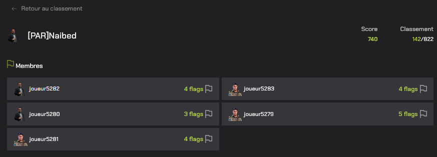
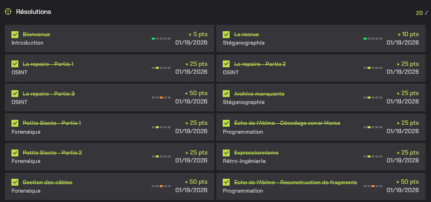
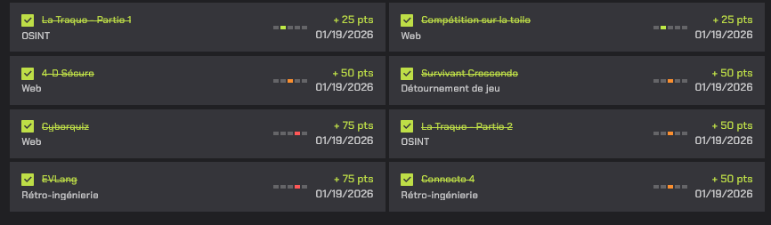
🗓️ Gestionnaire de tâche
Réalisé avec Zakariya FELLAH et Matthieu MERLEN
- Portail du gestionnaire de tâche (Cahier des charges, Cahier de recette etc...)
- Repository Github
- Site internet
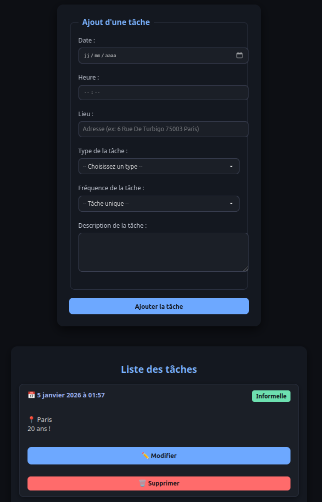
👨🏻💻 Red Team Competition CSAW2025 (Capture The Flags)
1 Octobre 2025 - 29 Octobre 2025
Nom de l'équipe : Naibed (Zakariya FELLAH, Matthieu MERLEN et Thomas MERLEN)
Place : 24/140
Flag found : 33/49
L'épreuve « Red Team Competition » est dédiée aux lycéen(ne)s, avec l'objectif de sensibiliser les jeunes aux métiers de la sécurité informatique et de susciter des vocations. Cette compétition est ouverte à tous les lycéens et lycéennes de France métropolitaine, qu'ils soient débutants ou initiés aux thématiques de la cybersécurité. Cet événement est aussi l’opportunité de rencontrer des experts et passionnés du domaine de la sécurité. Lors de l’épreuve RED, les candidat(e)s devront mettre en œuvre des techniques d’investigation numérique afin de découvrir et d’obtenir le plus d’information possible sur les menaces qui pèsent sur un système d’information. Les qualifications ont lieu en ligne du 1er au 29 octobre 2025. Elles se présentent sous forme de différents challenges à résoudre, de difficulté croissante, accessibles aux débutants et aux plus aguerris. La finale a ensuite lieu le vendredi 14 novembre 2025 à Valence à Grenoble INP - Esisar, UGA.
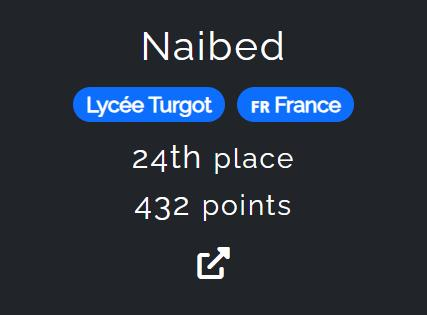
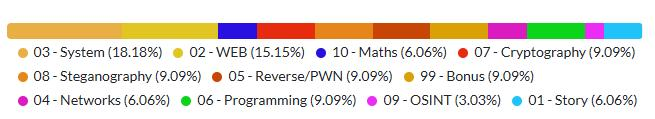
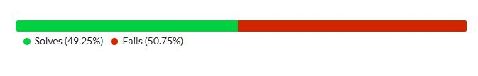
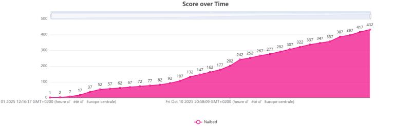
👨🏻💻 Hack ton lycée 2025 (Capture The Flags)
20 Octobre 2025 - 22 Octobre 2025
Place : 86/307
Flag found : 19/30
La Région Île-de-France porte la cybersécurité au cœur de sa stratégie numérique afin d’assurer la sécurisation des environnements
numériques régionaux et de sensibiliser les usagers franciliens aux bonnes pratiques du Numérique.
Le concours Hack Ton Lycée a été conçu en ce sens : valoriser la cybersécurité sur notre territoire en repérant nos meilleurs talents,
élèves ou enseignants, et en leur permettant de devenir de réels ambassadeurs de la sécurité numérique sur le terrain, au plus près
des usages.
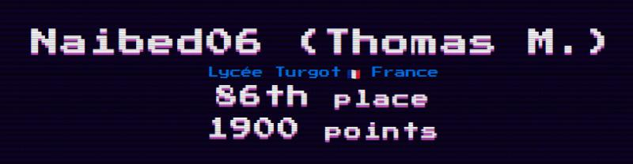
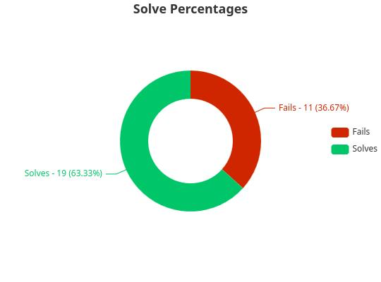
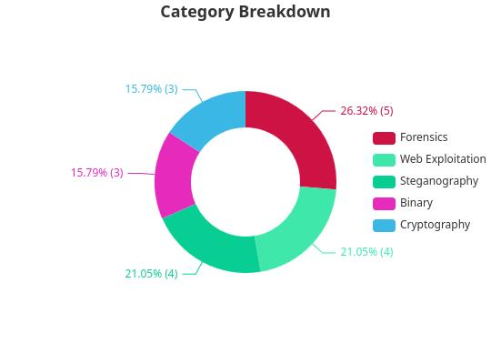
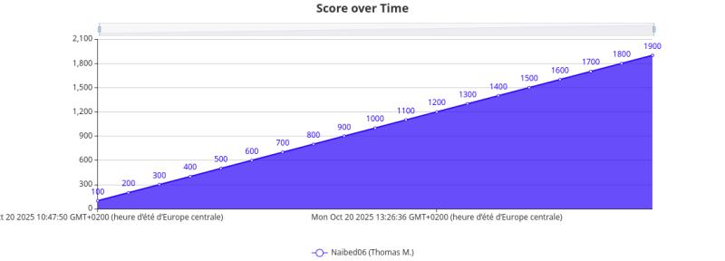
Tableau de synthèse
Procédure
- Serveur LAMP (Linux, Apache2, MariaDB, et PHP) - Wiki ubuntu-fr
- Serveur Wordpress - Wiki ubuntu-fr
- Procédure d’installation Arch Linux - Thomas MERLEN
- Procédure d'installation Docker sur Debian 13 - Thomas MERLEN
- Procédure d'installation OCS Inventory sur Debian 13 - Matthieu MERLEN
Veille technologique
Thème : Système Linux et Logiciel Libre
Définition
- Linux :
Linux est un système d’exploitation libre et open source, inspiré d’Unix, dont le noyau a été créé en 1991 par Linus Torvalds. Il est composé de plusieurs distribution adapter à chaque besoin de l'utilisateur
Les grandes familles de distribution sont Debian, Slackware et Redhat.
La distribution populaire pour le grand public est Ubuntu.
J'utilise personellement Linux Mint et Kali Linux qui sont tous les deux basés sur Debian.
- Logiciel libre :
Le Logiciel Libre désigne un logiciel que chacun est libre d’utiliser, d’étudier, de modifier et de redistribuer. Ces libertés, définies par la Free Software Foundation, garantissent à l’utilisateur un contrôle complet sur le logiciel. Les logiciels libres sont généralement développés de manière collaborative, et leur code source est ouvert et accessible à tous.
Parmi les licences libres les plus courantes, on retrouve la licence GPL, la licence MIT ou encore la licence Apache 2.0.
Voici quelque exemple de logiciel libre très populaire : Firefox (Navigateur Web), LibreOffice (Suite Bureautique), GIMP (Retouche d'image).
Article
Date de l'article : 11/02/2026
Auteur : Cassim Montilla
Données principales : En France, la part de marché de Linux dépasse pour la première fois les 5 %. La croissance de cette alternative à Windows continue de croître.
Date de l'article : 05/01/2026
Auteur : Antoine Roche
Données principales : Nvidia serait au travail sur un support natif de son service de cloud gaming GeForce Now pour Linux. Une vraie bonne nouvelle pour les joueurs qui voudraient quitter Windows dans les meilleures conditions.
Date de l'article : 16/12/2025
Auteur : Olivier Devillers
Données principales : Boé a équipé 95 % de ses ordinateurs de bureau avec Ubuntu, un système d’exploitation libre. Résultat : 25 000 euros d'économies sur les licences informatiques.
Date de l'article : 04/12/2025
Auteur : Vincent Hermann
Données principales : Linux confirme son augmentation depuis la fin de Windows 10. Sa part de marché, toutes distributions confondues, est en légère augmentation avec 3,2 %
Les distributions les plus utilisés sont SteamOS, Arch Linux, Linux Mint...
Date de l'article : 03/12/25
Auteur : Aymeric Geoffre-Rouland
Données principales : Face à l'arrêt du support de Windows 10, la ville de Blois en France expérimente une riposte inédite dans ses écoles. Une initiative qui s'inscrit dans un mouvement de bascule vers les systèmes libres.
Article officiel : Blois
Date de l'article : 26/11/25
Auteur : Aymeric Geoffre-Rouland
Données principales : + 1 Million de téléchargement de Zorin OS 18 sortie le 14/10/2025 jour où le support de Windows 10 s'est arrêter
Article officiel : Zorin Blog
Date de l'article : 12/09/25
Auteur : Reynald Fléchaux
Données principales : Dans la quête d'indépendance face à la technologie américaine, La Linux Foundation Europe souligne les atouts de l'open source
Sources d'informations
Evénements
Date : 10/12/2025
Lieu : Cité des Sciences, PARIS 75019
Date : Tous les premiers samedis du mois
Lieu : Carrefour numérique², Cité des Sciences, PARIS 75019
Organisateur : Parinux
Date : 04/10/2025
Lieu : Parc des princes, PARIS 75016